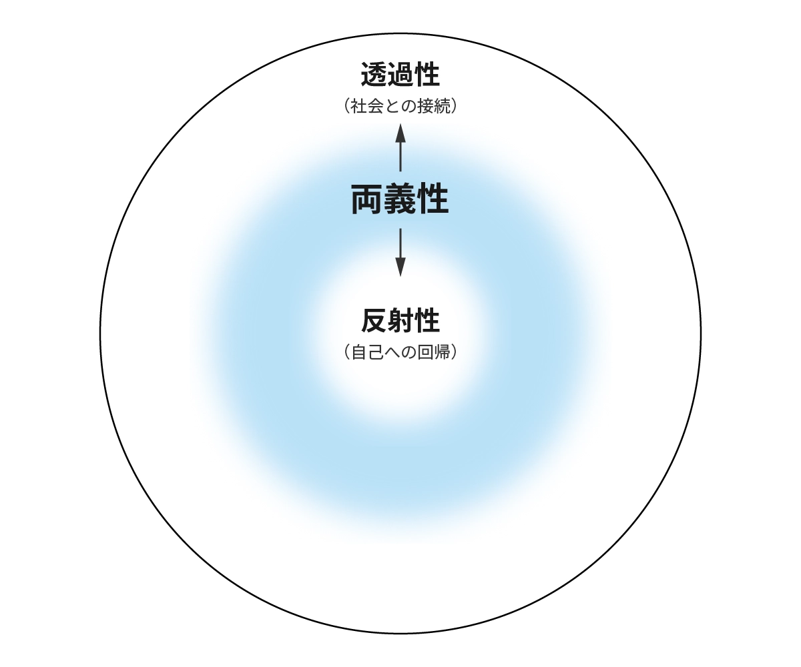
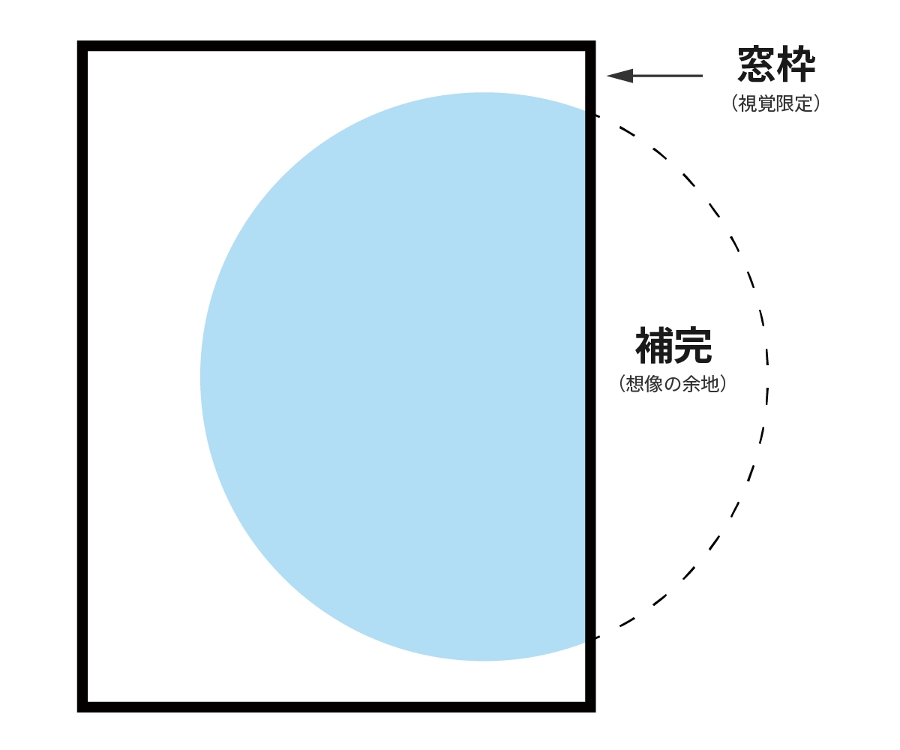
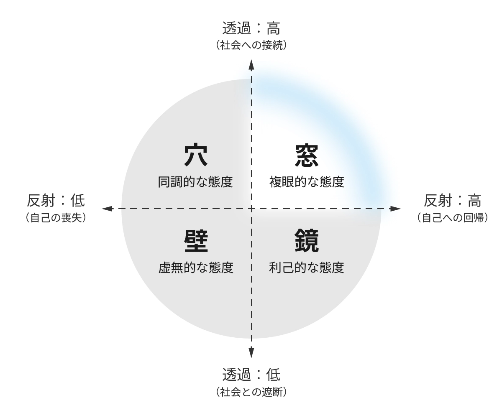

Fenestralism
「窓的思考」による曖昧さの価値の再考
概要
本研究は、窓の「透過・反射」が生む視座の揺らぎを曖昧さの象徴として捉え、新概念Fenestralismを提唱しました。合理性の追求で失われた「余白」を許容し、人々の思考力を取り戻す試みです。
成果物仕様
- 論文：80p.程度
- 写真（視覚資料）：A3, 7枚
作品詳細
- 科目名：修了研究
- 使用ツール：InDesign, Illustrator, Photoshop, Lightroom
- 制作期間：2024.04 - 2025.12
背景
現代社会では即時性や明快さが最優先され、立場や結論を迅速に提示することが前提となっています。その結果、曖昧さや逡巡といった状態は許容されにくくなり、複雑な課題が単純な二択へと矮小化され、分断が固定化する傾向にあります。
近年の資本主義の加速とグローバル化は、相互理解を支える制度設計や社会基盤の整備を置き去りにしたまま進行してきました。その結果、本来であれば社会全体で調整すべき摩擦が、差別や排外主義といった歪みとなって表出しています。
こうした構造的な歪みは、最終的に個人の負担として転嫁されます。生活の余裕を失った個人にとって、他者の複雑な背景を想像する力は損なわれ、安易な二項対立や即時的な断定が選好される状況に陥っているのです。
この波及は文化領域にも及んでいます。美術館における鑑賞体験でさえも、予約管理やSNSでの拡散を前提とした設計により「短時間消費」へと最適化されました。その結果、結論を急がず「曖昧さの中に留まる権利」は、公共的価値として扱われにくいのが現状です。
目的
本研究の目的は、「曖昧さ」や「揺らぎ」の受容を、多様性の尊重といった倫理的規範に委ねるのではなく、社会構造の一部として保持するための設計原理へと理論化し提示することにあります。 その中核概念として、窓が持つ「透過（他者への視線）」と「反射（自己の映り込み）」という二重性をモデル化した「Fenestralism（フェネストラリズム）」、すなわち「窓的思考」を提唱します。
これは、「他者／自分」「公／私」など二項の間に生じる視座の揺らぎやズレを、あらかじめ関係性の前提として組み込む枠組みです。本研究が目指すのは、道徳的な指針化や個人の我慢の称揚ではなく、揺らぎがあっても共存が破綻しないよう空間・制度・ふるまいを設計することです。
本研究により、曖昧さを抱えた関係維持が理想論ではなく、分断回避と生存のための現実条件であることを示します。
Fenestralismとは...
本概念は、「曖昧さ」や「揺らぎ」の認識を肯定的に再評価する新概念です。
ラテン語のfenestra（＝窓）を語源としており、さらにfenestraに由来する英語のfenestralは、「窓の」「窓に関する」という意味で定着しています。このように派生語が存在することから、本名称は既存の言語的スキーマ（認知的な単語形成ルール）に則った類推的なものであり、その定着が期待できます。日本語では、意訳として「窓的思考」を提案します。
これは、ガラス窓の特性「透過（外部への視線）」と「反射（自己の映り込み）」の同時性をモデル化した概念です。光を通しつつ同時に像を映す窓は、「内と外」「主体と他者」「現実と虚像」などの二項対立の間を媒介し、固定的な視点を相対化する装置として機能します。
そもそも、日本文化には「行間を読む」「察する」といった、言語化されない部分に真意が宿るという曖昧さを肯定的に受け止める伝統的な価値観が存在します。その事例として取り上げたいのが、ドラマ『カルテット』（TBS, 2017）内での以下の台詞です。
「はっきりしない人って、はっきりしないはっきりした理由がある」
*1 坂元裕二, 『カルテット』, 2017, 第2話.
この台詞は、曖昧さが単なる無思考や優柔不断ではなく、他者への配慮や事情を含む状態であることを示唆しており、こうした文化的な感性を象徴しているものと言えます。
命名の戦略
新概念の創出、命名に至った経緯は、フェルディナン・ド・ソシュールが記号論において定義した「シニフィアン（記号表現）」と「シニフィエ（記号内容）」という概念があります。言い換えれば、「名付け」によって世界の中からある事物が切り取られ、意味を伴って立ち上げる行為です。
例として、フランス語のpapillonが挙げられます。日本語では「蝶」と「蛾」を語彙上で区別するのに対し、papillonは両者をまとめて指す単語です。つまり、同じ対象であっても、言語体系が異なればシニフィアンの境界が変化し、それに伴いシニフィエの価値づけも変わります。日本語における「蝶＝優雅」「蛾＝不気味」という印象も、記号の恣意的な分節の産物にすぎません。
この事実は、「見え方」は固定的な本質ではなく、言語的文脈によって絶えず揺らぐものであることを示唆しています。よって本研究では、この「名付け」を社会的介入の一形態として位置づけます。
さらに、建築家の黒川紀章は以下のように述べています。
「観念とは違って、感覚には名付けられないし、説明されたことのないものがたくさんある。（中略）それでもなおかつ感覚について語ることがいま、重要なのだ。ある感覚に名をつけ、その輪郭を描いたり、歴史をたどりながら、その感覚の原点を探し求めるには、 深い共感と同時に、適度な反発による快い刺激がなくてはならない」
*2 黒川紀章, 黒川紀章著作集 批評・思想Ⅳ, 勉誠社, 2006, p.142.
このように名付けには、曖昧さを打ち出す概念として矛盾を伴う行為とも言えます。しかし、感覚の輪郭を描き出し、社会の中で共有可能な「刺激」として機能させるためには、あえて命名し、概念として提示するプロセスが不可欠であると考えました。
窓の特性
⑴窓のレイヤー構造
本研究では、窓を単なる境界線ではなく、内と外、自己と他者が視覚的に重なり合う「レイヤー構造」として捉えました。ガラス窓は、外の景色を見る透過性（社会との接続）と、ガラスに自分が映り込む反射性（自己への回帰）という、相反する事象を同時に引き起こし、視座の揺らぎが発生します。つまり、窓はその二重の要素を兼ね備える両義的な装置なのです。

⑵窓枠による視覚の限定
窓枠による視覚の限定が「アモーダル補完（見えない部分を脳内で補うこと）」を促す点にも着目しました。これは視界を部分的に遮る、すなわち情報を制限することで、逆説的に想像の余地が生まれることを意味します。Fenestralismにおいて、窓枠は単なる制限ではなく、想像を喚起し活性化させる創造的な装置として機能するものとして定義しました。

現代社会の分析
- ⑴効率主義と批評性の無害化
「タイパ（時間対効果）」の追求は、美術館における滞留や思索を「非効率」として排除し、鑑賞体験を短時間での消費へと最適化します。さらに、アンディ・ウォーホルや村上隆が提示した「境界の攪乱」といった批評的な文脈さえも捨象され、単なる消費しやすい記号へと無害化されてしまうのです。こうして本来、芸術が持っているはずの問いを立てる力が奪われています。 - ⑵過剰な共感と想像力の希薄化
SNSによる共感の数値化は、「わかりやすさ」への同調圧力を形成し、即時的な反応（＝報酬）が得られる表現への最適化を促します。これにより、共感しにくい複雑な背景や遠隔の他者への想像力が遮断されるだけでなく、内輪での共感を「正義」とした排他的な断罪、すなわち「共感の暴力」を生む土壌となっています。 - ⑶カテゴライズによる分断の固定化
推し活や性格診断等による属性のタグ化、あるいは政治的スタンスにおけるラベリングは、不安定な自己の輪郭を安定させるインフラとして機能する側面を持ちます。その反面で懸念されるのが、複雑な現実を「内／外」や「敵／味方」等の二項へと単純化し、他者を単一の属性へ閉じ込めてしまうリスクです。これは相互理解を「分類」へと置き換え、認識の更新や社会的な訂正を困難にしてしまいます。その結果として、分断を固定化させてしまう危険性が伴います。
実装論
- ⑴マクロ実践：制度・公共圏
都市公園における「Park-PFI（公募設置管理制度）」は、行政・民間・利用者の領域を半透明に重ね合わせる設計といえます。これは、複数の眼差しが交差する状態（相互可視性）を、監視ではなく「安全と自由の資源」として活用するものです。 - ⑵ミクロ実践：個人のふるまい
散歩（予定調和からの逸脱）や複合型書店への滞在（緩やかな連帯）により効率主義から距離を置き、さらに音楽プレイリスト編集（文脈の再編）によってビッグデータによる統計的な合理化に抗う行為といえます。これらは本研究において、現代社会の「過剰な最適化」から意図的に距離を置くための実践として取り上げました。即時の判断を保留し、答えの出ない事態に耐える力、すなわち、ネガティブ・ケイパビリティを日常的に養います。 - ⑶鑑賞体験における実践モデル：「ポケモン×工芸展」
本展は、消費されやすい「情報（キャラクター）」に対し、人間国宝らの手による「物質（工芸）」を衝突させました。工芸特有の物質の強度によって視線を強制的に滞留させ、安易な消費を拒む批評的な場を創出します。これは、知識がある者しか楽しめないという従来の「美術の閉鎖性」を打破する試みでもあります。よって美術館におけるFenestralismの好適な実践例です。
結論
Fenestralismは、曖昧さを無条件に肯定するだけの言説ではありません。曖昧さといった価値観は、差別や分断を防ぐための「制度やルールの明確さ（Hard）」があって初めて、「解釈や関係性の揺らぎ（Soft）」が安全に許容されます。
目指すのは、同調的な「穴」や利己的な「鏡」に陥ることなく、社会への接続（透過）と自己への回帰（反射）の双方を高く保ち続ける「窓」の領域です。これは、分断を回避し共存するための現実的な生存戦略であり、社会の中で曖昧さの価値をコモンセンスとして定着させる試みです。
